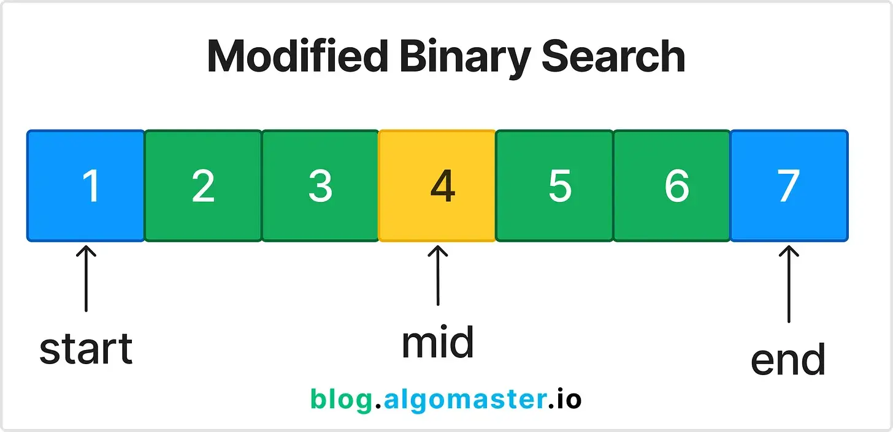

Modified Binary Search — это расширение классического бинарного поиска для решения задач, где поиск ведётся не только по отсортированному массиву, но и по более сложным условиям.
Когда использовать?
Когда задача требует поиска в отсортированных, частично отсортированных или циклически сдвинутых массивах, а также для поиска границ, первого/последнего вхождения и оптимальных значений.
Объяснение

Вместо простого сравнения с target, бинарный поиск модифицируется под условия задачи (например, поиск первого элемента больше/меньше, поиска в циклически сдвинутом массиве).
Часто используется для поиска границ (lower/upper bound), минимального/максимального значения, точки перехода.
В задачах с условиями (например, "можно ли выполнить за X шагов") бинарный поиск применяется по ответу.
Паттерн часто встречается в задачах на оптимизацию, интервалы, поиск в матрицах и др.
В Swift реализуется с помощью циклов и условий, иногда с рекурсией.